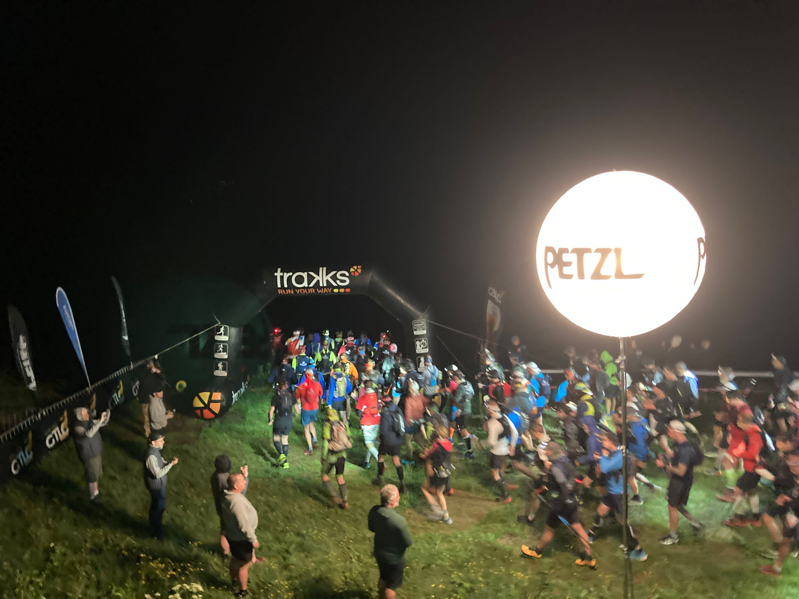
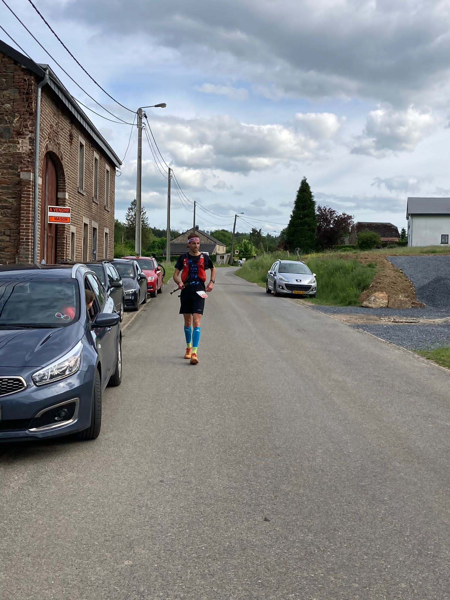

Het is zaterdagochtend 21 mei 2022 02.00 de wekker gaat, tijd om op te staan. Vandaag is de dag van mijn eerste 100 mijl race, de Grand Trail des Lacs & Chateaux. Met 6800m D+ en een ITRA 6 classificatie valt deze race in de zwaarste categorie. Al een aantal jaar loop ik met het idee om een 100 mijl race te lopen, de klassieke ultra afstand, en vandaag moet het gebeuren. Deze race heb ik ook bewust gekozen omdat het vroeg in het jaar plaatsvind. Over 4 weken is Tera namelijk uitgerekend van onze eerste zoon. Vanaf dat moment zal lopen even naar het tweede plan verdwijnen. De afgelopen maanden had ik echter nog alle tijd om te trainen. En zo sta ik dus op, met een kleine 2000 loopkilometers in de benen dusver in 2022 (2x zoveel als mijn fietskilometers dit jaar).
Om 02.15 zit ik aan 4 witte boterhammen met pure chocopasta in de keuken van ons huisje. Ik heb nog best redelijk geslapen. Na het startnummer ophalen om 18.00 de dag van tevoren, het priegelen met de bevestiging van de GPS tracker, en een laatste alcohol vrij biertje ben ik om 20.30 naar bed gegaan. Inslapen lukte in het begin niet echt, half 9 is gewoon te vroeg, maar ergens ben toch in slaap gevallen en heb uiteindelijk toch nog zeker 4 uur goede slaap gepakt.
Na het ontbijt en het gebruikelijke badkamerritueel worden de laatste spullen uit de vriezer (zelfgemaakte energie ballen en quesedillas) in de drop bags gedaan. Inmiddels zijn ook Tera, Dominique, Jarno, Marja en Cora en Hessel opgestaan en rond 03.20 vertrekken we richting de start.
Ovifat - Sortie de Trois-Ponts (0 - 63.5km)
De drop bags worden afgegeven, het racevest wordt omgedaan en de laatste checks worden uitgevoerd. Daar breekt gelijk het riempje van mijn Salomon vestje, gelukkig liggen er genoeg sluitspelden op het terrein voor een quick fix door Marja en Jarno. Voor een race van 100 mijl hoef je niet in te lopen, dus loop ik rustig richting de start en ga redelijk vooraan staan. Een meter of 5 linksboven mij staat mijn meegereisde support. Rechts wacht een zwart gat, de afdaling van de Ovifat skipiste. Een minuut stilte als eerbetoon aan een overledene en dan om 04.00 het startschot. Nog een laatste blik naar links en dan de skipiste af. Hoofdlampjes verlichten de het hoge gras, wat aan het eind van de dag platgelopen zal zijn maar nu nog fier overeind staat.

Gelijk wordt ik aan alle kanten voorbij gelopen. Wat begint iedereen snel! “Rustig blijven” zeg ik tegenmezelf, “de dag is nog heel lang”. Toch schiet mijn hartslag gelijk omhoog, 150bpm soms zelfs 160bpm. Veel te hoog, ik had mezelf voorgenomen om de hele dag ergens rond de 130bpm te gaan lopen. Alleen waardoor is die hartslag nu zo hoog? Het kan niet de snelheid zijn want ik begin rustig, zo’n 6min/km. Is het de adrenaline? Klopt het horloge wel? Achja, er is toch niet zoveel dat ik nu kan doen, in tegenstelling tot wat mijn hartslag zegt voelt het rustig dus lopen we maar zo door. Na een stukje afdalen begint de eerste klim en gelijk sta ik stil. Iedereen die me net hard voorbij rende begint nu de eerste heuvel op te wandelen. Het is een smal pad dus inhalen is niet echt een optie. Ik was van plan de heuvels te blijven rennen dus ik ben ligt geiriteerd. Wederom zeg ik tegen mezelf: “rustig blijven, het is maar het eerste heuveltje, zometeen lost de drukte op en kun je gewoon doorlopen”. Bovendien, die minuut die je langzamer bent door de eerste heuvel op te lopen gaat echt niks uitmaken op je eindtijd. Bovenaan begint de groep inderdaad langzaamaan uiteen te vallen. Omlaag wordt ik weer ingehaald. Ik hoor de mensen praten over hoe ze zich zullen voelen na uur 10 en na uur 30. 30 uur? Dan hoop ik toch wel al binnen te zijn. Ik heb echter na 5km al geen flauw idee meer waar ik me in het veld bevind. Daar moet ik ook niet mee bezig zijn, het is beter om gewoon kalm te blijven en mijn eigen race te gaan lopen.
Na 6km komt de 2e heuvel tevoorschijn, of heuvel, dit is een ware muur van leisteen. Bij elke stap glij ik een stuk terug. Dat wordt ook niet rennen op deze heuvel. Het doet me denken aan de beklimming van de Kilimanjaro een paar jaar eerder. Tijdens de push voor de top was het ook recht omhoog over een berg van ligt gravel. Het enige verschil is dat deze beklimming na een paar minuten voorbij is en het toen de hele nacht duurde. Na de klim volgt een afdaling en die is ook gelijk technisch. Hier kun je niet heel hard doorlopen, je moet goed opletten waar je je voeten neerzet op het smalle pad in het donker. De kop is eraf en het begint direct best pittig, twee stevige klimmen en een technische afdaling.
Ik kom bij de eerste splitsing na 10km, hier scheidt onze route zich van kortere afstanden. Langzaamaan zakt mijn hartslag wat en ook het pad wordt iets gemakkelikjer. Ik vraag me af hoe het met de rest gaat, die liggen vast alweer onder de wol. Ik heb met Tera afgesproken dat ze naar het punt op kilometer 63.5 komen. Daar zou ik rond het middaguur moeten aankomen dat geeft hen wat tijd om te slapen en daarheen te reizen, en tot daar zou ik het ook alleen moeten redden.
Inmiddels ben ik ruim een uur geleden gestart. Nu wordt het tijd om in een lekker ritme te komen waarvan ik denk: “zo kan ik wel de hele dag doorlopen”. Dat ziet er als volgt uit, niet te hard lopen, zo rond de 9 a 10 km/u op het vlakke, niet te hoge hartslag liefst onder de 135bpm en elk kwartier eten. Eten kan zijn een door Tera zelfgemaakt balletje met pindakaas 1 of dadels 2, een quesedilla, een energie gel (high5) of een flinke slok spordrank. Mijn doel is zo’n 400kcal per uur binnen te krijgen. Dat komt neer op 250ml sportdrank, twee balletjes en nog een gelletje. Het is iets minder dan de vuistregel van 90g koolhydraten omdat er ook nog wat vet en eiwitten bijkomen.
En zo voltrekken zich de eerste uren waarin de zon opkomt. Bij de eerste fourage post (er is er één elke ~20km) doe ik mijn hoofdlamp af, drink wat cola, neem wat tucjes, en ben binnen een paar minuten weer werg. Nog steeds heb ik geen idee waar ik precies loop in het veld. Bij een waterpassage en op een heuvel, ik ren nogsteeds omhoog, haal ik mensen in en even later passeer ik een toeschouwer: “Très bien. Numero dix!”. En hij zegt nog wat in de trend van, “het ziet er echt goed uit”. De aanmoediging en de informatie dat ik nu op plek 10 loop voelen goed! Zo krijg je er zin in.
Na 37km kom ik aan bij de eerste ravito met drop bag (er zijn er drie onderweg, ongeveer één na elk kwart). Nieuwe high5 spordrank in mijn borstflacons, nieuwe balletjes, gels en quesedillas pakken, water bijvullen, cole en een tucje erin en snel weer verder. Bij de volgende post zullen Tera en de rest staan, dus dat is iets om naar uit te kijken. Het is echter nog wel 26km lopen voordat ik daar ben. Helaas blijk ik een foutje te hebben gemaakt, ik heb mijn drinkzak niet goed gevuld, die zit maar voor ongeveer een derde vol dus veel water heb ik niet. Bij het nemen van een slok sportdrank in de afdaling vliegt ook nog het tuitje van mijn borstflacon eraf. De sportdrank spuit eruit. Ik kan nog net het flesje rechthouden om wat inhoud te redden, maar waar is die dop? Ik stop om te zoeken en gelukkig na een minuutje vind ik het tuitje. Gelukkig maar, want anders had ik het de rest van de dag met één bidon sportdrank moeten doen! De organisatie had nog een extra waterpunt ingelast op dit traject maar die mis ik (niet als enige) en dus is dit het vocht waar ik het mee moet doen. Na een dikke 60km is er een steile afdaling en hoor ik mensen roepen dat het nog één kilometer is tot de bevoorrading. En daar zie ik ze al staan, fijn daar had ik naar uitgekeken! Ik neem weer wat cola en tucs (max. 3 ofzo), vul mijn nu lege bidons met cola en grenadine, doe mijn armstukken af, en vul met hulp van Jarno dit keer wel goed de waterzak. Een kort praatje en dan weer verder.
Sortie de Trois-Ponts - Salmchateau (63.5 - 89km)
Direct na de ravito volgt een klim. Inmiddels heb ik besloten dat het toch handiger is om op de klimmen te power hiken in plaats van te rennen. Veel klimmetjes zijn steil, dus dan is het snelheidsverschil klein. Daarnaast kan ik met de stokken (black diamond carbon Z poles) ook lopende best wat tempo maken, 6-7km/u zit er wel in als het niet al te steil is. Maar het belangrijkste is, het spaart de benen en de afwisseling voelt prettig. Ik merk steeds meer dat ik uit begin te kijken naar de klimmetjes.
Mijn langste training was 66km (70km met de stukjes naar en van de trein erbij), dus ik begin me op nieuw terrein te bevinden. Alles voelt echter nog prima, ik heb een lekker tempo en het te lopen kilometers is inmiddels minder dan 100. Af en toe wordt ik ingehaald door twee belgen die ik voor het eerst rond 30km ben tegengekomen. Toen haalde ik ze in bergop, bergaf en op het vlakke lopen ze mij weer voorbij. Zo gaat dat ook nu nog steeds. Op een gegeven moment haal ik ze weer in omhoog en moet één van hen een gaatje laten, die zie ik niet meer terug.
Zo gaat het door, ik probeer ruim 8km/u aan te houden (dat is 7’30”/km) en dat gaat goed over de rollende maar goed begaanbare paden. We halen nog iemand in, die had geen gpx heeft en verkeerd is gelopen. Soms zijn de bordjes inderdaad best lastig te zien, ik ben blij dat mijn horloge waarschuwt als ik verkeerd loop. Vlak voor de volgende stop begin ik te merken dat mijn bovenbenen op de stukken naar beneden nu toch een beetje beginnen te verstijven. Dat is ook niet gek, er zit al bijna 90km op en veel omlaag lopen doe ik niet. Het gaat wel ten koste van mijn snelheid omlaag en je gaat er ook houteriger van lopen.
En dan de school, de tweede drop bag en nog belangrijker mijn support staan hier. Paul en Brittany zijn er ook, hierheen gekomen vanuit Noord Limburg. Tera en Jarno helpen mij met het bijvullen van mijn flesjes en waterzak. Daarnaast wissel ik mijn t-shirt voor een droog exemplaar en doe ik schone sokken aan. Mijn voeten zien er nog goed uit! Ik hoor dat sommigen meer problemen met hun voeten hebben. Lang zit ik uiteindelijk niet stil. Voordat ik ga vraag ik Tera of ze ook naar het volgende punt komen, en dat gaan ze doen. Alleen Jarno en Marja niet, want die moeten zich klaar gaan maken voor hun eigen race, de 20km duo night trail!
Salmchateau - Coo (89 - 129km)
Doordat ik vlot weg ben bij de ravito heb ik wat mensen ingehaald, inmiddels loop ik ergens rond plek 5! Het idee dat het nu begint met aftellen is lekker. Echter, nadenken over de finish is nog te vroeg. De tijd lijkt wel vanzelf voorbij te gaan. Een paar dagen na de race kijk ik samen met Tera naar een online bevalcursus. Daarin wordt verteld dat het hormoon oxytocine wat vrijkomt tijdens de bevalling tijdperceptie kan beinvloeden. Hierdoor kan het lijken alsof een uur in 5 minuten voorbij is gegaan. Terugdenkend bedenk ik me dat dit tijdens de trail ook zo lijkt. Uren en uren ben ik aan het rennen. Als ik daar vooraf of achteraf aan denk kan ik me haast niet voorstellen dat dit lukt zonder gek te worden. Maar tijdens het lopen lijkt de tijd te vliegen. Datzelfde gevoel heb ik ook tijdens een 10 uur durende Ironman, opeens zijn die uren voorbij. Grappig genoeg lijkt er ook oxytocine vrij te komen tijdens het rennen van ultramarathons 3.
Het hele stuk tot de post bij Bergeval loop ik alleen en kom niemand tegen. Aldaar lig ik 4e, nog maar een dik kwartier achter de nummer 3. Ik denk er nog maar niet teveel over na. Ondanks dat 2/3e erop zit is er nog steeds 55km te gaan. Daarin kan nog zoveel gebeuren. Ik vraag aan Tera of ze ook naar Coo komen, de volgende post. Ze zegt dat dit niet het plan is, want ze willen nog bij Marja en Jarno gaan kijken. Ik geef echter aan dat ik het toch wel erg fijn zou vinden als iemand daar is voor support. Het is de laatste post met drop bag en ik wil niet weer eenzelfde fout maken als bij de eerste, waarbij ik te weinig water bijvul. Dus komen ze toch (sorry Marja en Jarno dat er niemand was bij de start!).

Inmiddels is de Belg die ik al de hele dag tegenkom ook aangekomen bij de post. Ik vervolg mijn weg, eerst een paar honderd meter asfalt, ook welleens lekker. De oxytocine doet zijn werk voor de tijd, die tikt rustig weg. De bovenbenen beginnen wel steeds vaker op te spelen. Power hiken omhoog gaat nog steeds vlot, maar tegen de afdalingen begin ik echt op te zien. Waar je met frisse benen lekker naar beneden kan bollen, voel ik nu hoe mijn quadriceps elke stap omlaag opvangen. De afdaling richting Coo gaat dus ook niet van harte. Bij Coo steek ik twee keer een dijk over, achteromkijkend zie ik hoe de Belg mij rap nadert. Vlak voor de post haalt hij mij bij. We praten wat en vanaf dat moment zullen we de rest van de weg samenlopen.
Nog een trapje en dan applaus. De laatste rustplek met drop bag, vanaf hier nog driekwart marathon te gaan! De vrijwilligers met onesies zijn erg enthousiast. Tera helpt me in schone sokken en een fris shirt met lange mouwen, want de avond begint te vallen en het wordt snel frisser. Flesjes bijvullen, wederom 3 tucs, wat cola en helaas geen bouillon (er is alleen kip). Paul en Brittany nemen afscheid, hoofdlamp gaat op, en samen met Arne begin ik richting de laatste stop.
Coo - Ovifat (129 - 164km)
Vanuit Coo is het direct 300m omhoog, maar dat is niet zo’n probleem. Arne gaat sneller omlaag, maar het helpt om met iemand mee te lopen en diens pas te volgen. Hij breekt wel een teennagel opweg omlaag, maar kan al snel zijn weg weer vervolgen. Ondertussen valt de duisternis langzaam in. Soms is het best zoeken naar de bordjes, vooral in het stadje Stavelot, zonder gpx route was het ongetwijfeld veel lastiger geweest. Het beste is er inmiddels wel af en stukjes rennen worden afgewisseld met wandelen zodra de weg ook maar een beetje omhoog begint te lopen. Eten wordt ook lastiger. Er zijn al quesedillas geweest waarbij ik de korst heb weggegooid en de balletjes kijk ik ook niet echt meer naar uit (het helpt niet dat ze inmiddels soms ook zijn verworden tot één grote bal). Gels en sportdrank vallen daarentegen wel goed. Water ook, alleen ben ik een beetje bang dat ik te weinig zout begin binnen te krijgen dus toch ook maar quesedillas blijven eten. Inmiddels ben ik ook met de cafeine gels begonnen, die heb ik bewaard voor het eind van de dacht om ook het slaapmonster buiten de deur te houden.
Rond middernacht komen we aan bij Malmedy, de laatste stop! Daar zijn Jarno en Marja inmiddels ook weer, die hebben hun eigen race er al opzitten. Ik leeg mijn zakken (die laatste 19km kom ik ook wel door zonder vast voedsel), drink meer cola, vervang de batterij van mijn hoofdlamp en vertrek weer. Gelijk weer klimmen vanuit de start. Achja, dan heb je de hoogtemeters waar weer gehad. Met Arne bespreek ik hoelang het nog gaat duren, 19km dat kan nooit meer zijn dan zo’n 2.5uur, zeker omdat het hoogte profiel wel mee lijkt te vallen. Echter, we blijken ons vergist te hebben. Na de klim begint het: veel smalle paden langs een beekje met wortels en met rotsen. Dat loopt normaal al niet heel snel, maar met vermoeide benen en in het pikdonker al helemaal niet. Ik ben blij dat we met zijn tweeen zijn. Zo kan ik Arne helpen met het vervangen van de batterij van zijn hoofdlamp en is het een prettig idee dat er iemand in de buurt is mocht je vallen.
Zo ploeteren we door. We halen wat lopers van de 85km race in en dan hoor ik opeens het getik van stokken rap naderbij komen. Een andere loper uit onze race komt ons heel snel voorbij. Hoe loopt die nog zo snel vragen we ons af? Van een gedeelde 4e plek vallen we terug naar plek 5/6. Niks aan te doen, ik heb de benen niet meer om te volgen, al doe ik nog een kleine poging in het begin. Gewoon doorgaan. Bij elke afstap van meer dan 10cm voel ik de kramp in mijn bovenbenen. Tredzeker ben ik zeker niet meer alleen in het hoofd zit het nog wel goed. Het idee dat ik ga finishen, voorin het veld en binnen de 24 uur werkt motiverend. We ploeteren door, komen na 160km nog bij een steile afdaling en dan volgt het laatste makkelijke stukje richting de skipiste. Onder ons zie ik twee lampjes voorbij komen, dat moeten de nummer 7 en 8 uit de race zijn. Die liggen dus ook niet ver achter. Er is echter nog maar 1.5km te gaan en daarvoor is het gat te groot dus dat zit wel goed. Aan Arne vraag ik of hij samen over de finish wilt lopen, dat vindt hij ook een goed idee. Een sprintje is leuk, maar niet zo nodig nadat je al zo’n 40km samen hebt gelopen.
Nog één keer naar links en dan omhoog linksaf de skipiste omhoog. Onder het liftje rennen we richting de Petzl ballon als nr. 5 en 6. Bovenaan een snelle links/rechts en dan is daar de finish, Tera en de rest! Gehaald dik 100 mijl door heuvelachtig terrein. Ik had verwacht veel emoties te voelen maar ik ben vooral heel blij dat ik er ben en een beetje murf! Ik ga zitten, dwing mezelf cola te drinken en tucs te eten en geniet van het onthaal in kleine sfeer.
Einde
Hoe ik net nog heb kunnen rennen weet ik niet, maar over de parkeerplaats strompel ik richting de auto. Het is zelfs zo erg dat ik Hessel vraag of hij niet de auto wilt halen. Met moeite zak ik de auto in. Eenmaal bij het huisje, het is inmiddels alweer na 04.00 op zondag, trekt Jarno mijn sokken en tubes uit. Zelf kom ik daar niet meer bij. Ik stap met hulp van Tera onder de douche en drink ook daar nog een kop thee. De deur blijft open, te bang dat ik omval. Tera brengt me naar bed. Het lukt me haast niet om te draaien in bed, overal spierpijn: benen, schouders, alles. Als het dan toch lukt ben ik mijn deken kwijt, dus die moet Tera ook weer terugleggen. Van topfit naar compleet hulpeloos, dat is wat deze 100 mijl met mij heeft gedaan. Kapot maar voldaan val ik in slaap.
De volgende ochtend voel ik me eigenlijk best prima. Ja de spierpijn maakt dat ik zowat niet uit mijn stoel kan komen en de trap een heel avontuur is, maar mentaal gaat het goed. Ik voel me opgewekt en geniet van het ontbijt. Ik ben heel dankbaar voor alle support, zowel de aanmoedigingen van de mensen thuis en al helemaal van iedereen die meegereisd is. Tijdens zo’n exercitie is alle hulp meer dan welkom. Het vooruitzicht dat er mensen voor je staan bij de volgende post helpt heel veel. Vooral Tera, die hoogzwanger de hele dag erbij is geweest, van het ontbijt totdat ze mij in bed heeft gelegd, heeft ook een topprestatie geweest. Nu maar snel de rollen omdraaien.
Tot slot, heel erg bedankt aan de organisatie en vrijwilligers voor een fantistisch evenement. Het maakte dat ik met een glimlach bij elke post ben aangekomen en vertrokken. Ik kijk al uit naar het volgende avontuur!
Voetnoten
Footnotes
Hew-Butler T, Noakes TD, Soldin SJ, Verbalis JG. Acute changes in endocrine and fluid balance markers during high-intensity, steady-state, and prolonged endurance running: unexpected increases in oxytocin and brain natriuretic peptide during exercise. Eur J Endocrinol. 2008 Dec;159(6):729-37. doi: 10.1530/EJE-08-0064. Epub 2008 Sep 15. PMID: 18794210.↩︎